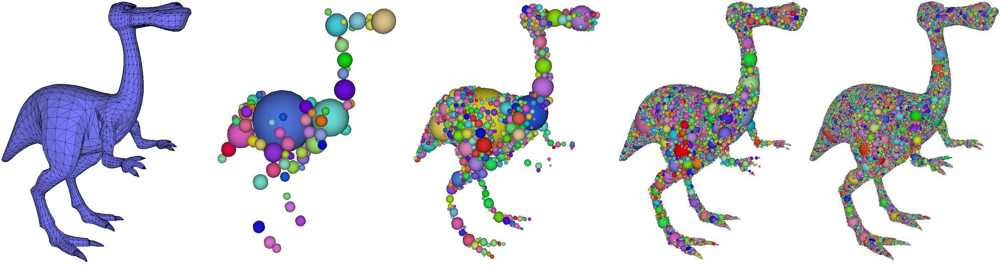

|
CGAL 6.1 - Sphere Packing
|
Loading...
Searching...
No Matches
|
CGAL 6.1 - Sphere Packing
|
Sphere packings have a wide range of applications in scientific and engineering disciplines. While the computation of optimal sphere packings, e.g., filling the largest number of fixed size spheres into a volume or occupying the largest volume with a fixed number of spheres, has NP complexity and is generally known as the "Packing problem". The Protosphere method instead calculates a greedy packing, i.e., it iteratively inserts the largest non-overlapping spheres inside the volume.
The Protosphere algorithm calculates a sphere packing on GPU in a massively parallel manner. It uses two voxel grids, one to insert sphere candidates and one to speed up the calculation of the closest point on the enclosing volume. A sphere candidate is generated in each cell of the grid and moved away from the closest point on the boundary and other already inserted spheres in an iterative manner. The largest candidates are then inserted into the sphere packing and new sphere candidates are generated. Grid cells that are outside of the object or completely inside spheres are excluded from following iterations. Two different grids are used as the initialization cost and memory requirements differ for the two tasks. The grid for sphere placement is initialized with a coarse resolution as during the first steps typically a few very large spheres are placed that cover large parts of the volume. The grid is refined after a some placement iterations to allow for a broader search while limiting the memory usage as a larger number of grid cells is already covered by spheres. The grid to identify the closest point on the enclosing volume is expensive in initialization, but doesn't add to the computation cost for each iteration. It is thus initialized with a higher resolution and a split is often not required.
The method has three parameters which are used to terminate the packing:
number_of_spheres: The number of spheres to be packed. The default is 1,000 spheres. As the packing algorithm may pack many spheres in one iterations, the actual number of spheres in the packing may exceed the provided number.target_coverage: The target percentage of the volume to be covered with spheres. As for the number_of_spheres parameter, the actual coverage may exceed the provided percentage. The default value is set to 0.92. However, this parameter depends on the shape of the input object. If the input is a object is a sphere, the packing may reach full coverage with a single sphere. If the target volume is a long thin pipe, a very large number of spheres may be required to reach a significant coverage.minimal_radius: The minimal radius of packed spheres. If no larger sphere can be placed, the packing terminates. The default value is 0, i.e., this termination condition is disabled by default.In addition the following parameters can be provided, but have useful default values:
initial_grid_resolution: The initial resolution of the grid used for the placement of the spheres. The grid cells are cubic and initial_grid_resolution specifies the number of grid cells along the longest axis of the bounding box. The default value is 2. For elongated objects with a small diameter, e.g., pipes, a higher number may be useful. The number of cells in the grid grow cubic with each split, as the number of cells along each axis is doubled.maximum_splits: The maximum number of possible splits. Splitting the grid allows the placement of more spheres in parallel. However, the computational effort and the memory requirement grow cubic. The splitting is performed the first time after 6 iterations and afterwards every 30 iterations until maximum_splits is attained or the packing has terminated. The default value is 3 splits at maximum.iterations_between_splits: This parameter specifies the number of iterations of the sphere packing before the grid is split. The first split is fixed at 6 iterations as the grid resolution is very low at the start. The default value is 30 iterations.The method is demonstrated at the dino model as it possesses some compact and some fine parts, see Figure 107.1. Choosing a lower number of spheres, e.g., 100 or 1000 spheres, leads to a sparse coverage in legs and arms. A coverage of at least 98% is achieved with 58.3k spheres.

Figure 107.1 Packing with a 98% target coverage.
From left to right: 1. dino input mesh, 2. 100 spheres, 3. 1kspheres, 4. 10k spheres, 5. 58.3k spheres
The following table shows the coverage and performance when using standard parameters and 98% target coverage with the dino model. A NVidia RTX A2000 laptop GPU with 4 Gb of memory was used.
| Dino | 100 Spheres | 1k Spheres | 10k Spheres | 58.3k Spheres |
|---|---|---|---|---|
| Time | 0.77s | 4.8s | 34.7s | 368s |
| Coverage | 59.3% | 72.0% | 83.3% | 98.1% |
The following example demonstrates the sphere packing of the dino model with 1.000 spheres. The result is exported into a ".spheres" file which can be displayed in CGAL Lab.
File Sphere_packing/sphere_packing.cpp